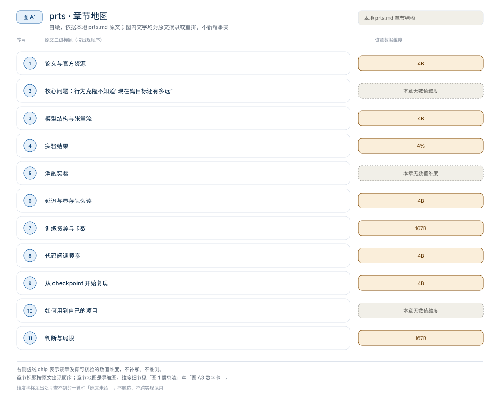
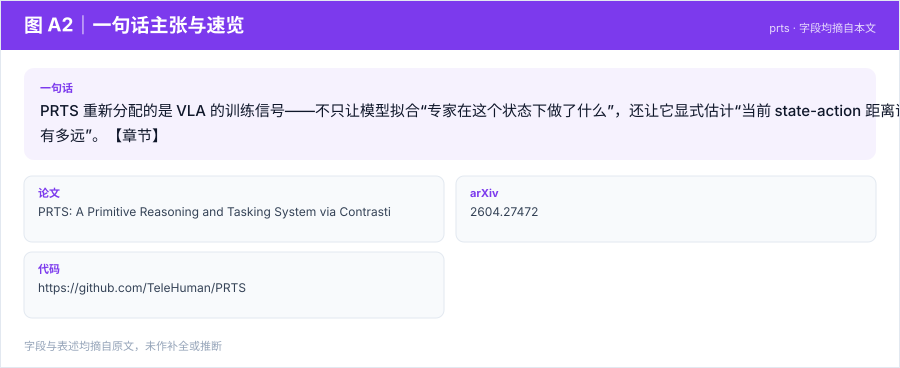
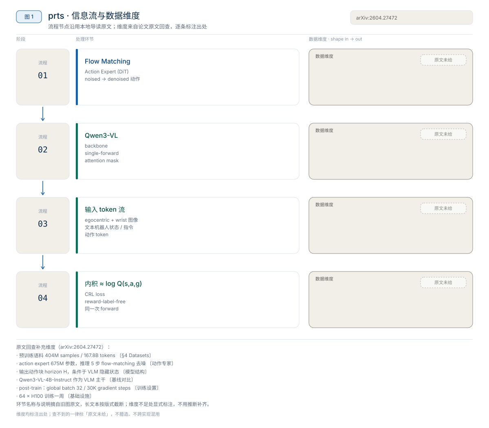
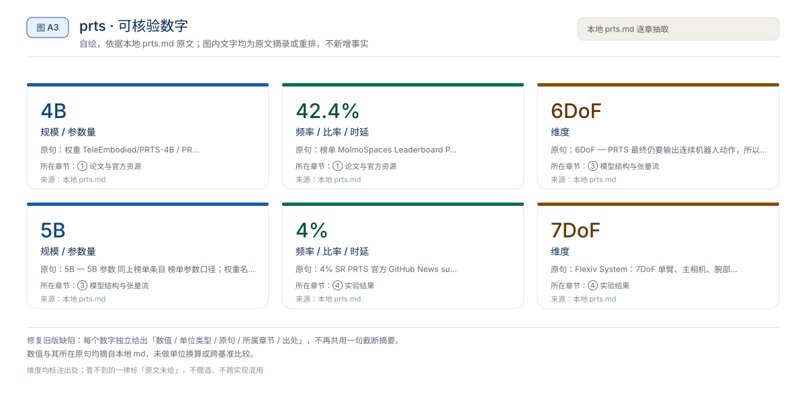
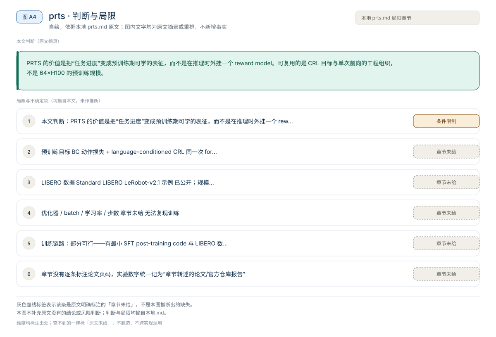

【VLA 精读 · 训练范式】Agentic-VLA：给 OpenVLA-OFT 加一个会设计奖励、引导探索、复用权重的在线适应外环
Agentic-VLA 重新分配的是“部署后如何继续学习”的接口——不再只靠人工补示教或固定奖励，而是让 Experience Memory、VLM 探索 critic 和语言模型奖励分解共同调度一次在线 RL 适应。【章节】
训练范式
PRTS 重新分配的是 VLA 的训练信号——不只让模型拟合“专家在这个状态下做了什么”，还让它显式估计“当前 state-action 距离语言目标还有多远”。【章节】
原题与资源：PRTS: A Primitive Reasoning and Tasking System via Contrastive Representations · arXiv:2604.27472 · 代码
一句话：PRTS 重新分配的是 VLA 的训练信号——不只让模型拟合“专家在这个状态下做了什么”，还让它显式估计“当前 state-action 距离语言目标还有多远”。【章节】
阅读成本：正文约 9622 字 / 10 个章节 / 5 张图；目录按本文原有章节顺序排列，章节内容未改动。
目录（点击跳到对应章节）：

图 A1：本文章节地图（节点即原文 h2 标题）。自绘，依据本文，不新增事实。
PRTS 的核心不是换更大的 backbone，而是在 Qwen3-VL-4B 的 VLA 预训练里同时学动作生成与 goal-reachability awareness：用轨迹时序结构构造 reward-label-free 对比 RL 监督，让 state-action embedding 与 language goal embedding 的内积近似“从这里继续执行能否到达目标”。章节给出的头条数字是：预训练约 167B tokens、64 张 H100；标准四套 LIBERO 平均成功率 98.4；PRTS-Droid 在 MolmoSpaces Leaderboard 排名第 3、成功率 42.4%，榜单 Combined 字段为 65.36；许可证 CC BY-NC 4.0。以上为章节转述的官方 README、模型卡与榜单信息，未在本机复测；榜单会更新，数字按 2026-07-18 检索口径。
来源约定：本文事实只取自本仓库 PRTS 导读。章节没有逐条标注论文页码，实验数字统一记为“章节转述的论文/官方仓库报告”。
版本：arXiv 2604.27472，2026-04-30 提交；代码 commit：章节未给；查阅日期：2026-11-01。
| 资源 | 网页来源 | 说明 |
|---|---|---|
| 论文 | arXiv:2604.27472 / HTML | 方法、CRL 目标与实验 |
| 源码 | TeleHuman/PRTS | 最小 SFT post-training code、LIBERO evaluation、CRL value visualization scripts |
| 权重 | TeleEmbodied/PRTS-4B / PRTS-4B-LIBERO | 基于 Qwen3-VL-4B；LIBERO checkpoint 对应论文数字 |
| 项目页 | rhodes-team-prts.github.io | 官方项目页 |
| 数据集 | 章节未给链接 | 公开 Standard LIBERO LeRobot-v2.1 示例，章节未给具体地址与规模 |
| 榜单 | MolmoSpaces Leaderboard | PRTS-Droid, TeleAI 位列 TOP3；README 记录 42.4% SR |
论文题目：PRTS: A Primitive Reasoning and Tasking System via Contrastive Representations；作者单位：中国电信人工智能研究院 TeleAI、清华大学、上海交通大学、复旦大学等；arXiv：2604.27472；版本：2026-04-30 提交；代码 commit：章节未给；查阅日期：2026-11-01。
开源与许可边界：GitHub README 写明项目使用 CC BY-NC 4.0，代码与权重可用于学术和非商业用途，商业使用不被该许可证允许。release plan 中已公开的有：preprint、PRTS-4B、LIBERO LeRobot-v2.1 数据示例、最小 SFT 代码、LIBERO 评测、PRTS-4B-LIBERO、CRL value 可视化脚本；PRTS-4B 的 SimplerEnv WidowX post-trained checkpoint 仍在后续计划中。

图 A2：一句话主张与速览字段。自绘，依据本文，不新增事实。
一句话：PRTS 重新分配的是 VLA 的训练信号——不只让模型拟合“专家在这个状态下做了什么”，还让它显式估计“当前 state-action 距离语言目标还有多远”。【章节】

图 1：PRTS 的 Qwen3-VL、flow-matching 动作头与对比 RL 分支。自绘，依据本地导读；不是论文原图。
章节用“把杯子放进盒子”举例：夹爪刚靠近杯子、杯子已被抓住、杯子已到盒子上方、杯子掉到桌面边缘、杯子放进盒子但盒盖没关——这些状态的“下一步动作”在示教里可能都出现过，但行为克隆不告诉模型哪些状态更接近成功。遇到偏离示教的状态时，模型缺少可量化的任务进度感。
对比主流路径：纯行为克隆 / 动作回归 → 行为克隆 + 预训练期 goal-reachability 对比监督。

图 A3：本文可核验的数字摘录。自绘，依据本文，不新增事实。
一个具体任务走一遍 · 本文可核验数字与字段速查（以下均摘自原文，未作推算）：
PRTS 的输入不是单张图，而是一条混合 token 序列：egocentric view、wrist view、vision tokens、textual robot state、instruction 与 action tokens。文本化 robot state 是重要细节：机器人状态被放进语言模型可处理的序列里，让 backbone 同时看到视觉、语言、状态与动作上下文。
| 组件 | 章节给出的内容 | 作用 |
|---|---|---|
| 视觉输入 | egocentric view + wrist view | 提供第一视角与腕部近景 |
| 机器人状态 | textual robot state | 把 proprio/关节状态放进语言序列 |
| 语言 | instruction（作为 goal） | 同时进入动作分支与 goal encoder |
| 动作 | action tokens | 行为克隆的动作侧输入/输出 |
| Backbone | Qwen3-VL | 视觉语言与状态动作的统一编码 |
| Attention mask | Designed Single-Forward Attention Mask | 让 BC 动作预测与 CRL value 学习在同一次 forward 完成，同时避免信息泄漏 |
| 动作头 | Flow Matching Action Expert（DiT） | 从 noised action 预测 denoised action，输出连续 chunk |
| CRL 分支 | state-action encoder φ(s,a) + goal encoder ψ(g) | 内积估计 goal reachability |
章节对 mask 的描述是“哪些 token 可以互相注意”：CRL action 与 CRL goal 不是随便全互看，而是按自监督目标构造可用上下文。章节没有给 mask 的具体矩阵、层数、token 数或隐藏维度。
PRTS 最终仍要输出连续机器人动作，所以在 Qwen3-VL 表征上接 flow matching action expert，用 DiT 结构从 noised action 预测 denoised action。章节把它定位为与现代连续动作 VLA 一致的做法：不把复杂 6DoF/关节动作硬离散成语言 token，而用连续生成模型处理。章节没有给 chunk 长度、去噪步数、动作维度或控制频率。
CRL 分支构造两个编码器：state-action encoder φ(s,a) 与 goal encoder ψ(g)，让二者内积近似 log Q(s,a,g)：
$$
\log Q(s,a,g) \approx \phi(s,a)^\top \psi(g)
$$
也就是“从当前状态-动作出发，最终到达语言目标 g 的可达性”。训练信号来自演示轨迹的天然时序结构：在一条成功轨迹中，越靠后的状态通常越接近语言目标。同一任务目标下，后续能通向成功的 state-action 应与 goal embedding 更接近；不匹配的 goal 或错误阶段应更远。论文用 geometric temporal weighting 让远近时间步对监督强度产生不同贡献。
| 维度 | 普通 RL | PRTS CRL |
|---|---|---|
| 监督来源 | 环境 reward 或人工成功标签 | 离线轨迹的时序结构 |
| 额外网络 | 通常单独训练 value / Q 网络 | value head 与 VLA backbone 同一次 forward 联训 |
| 训练成本 | 常比 BC 贵很多 | 官方强调接近 BC compute |
| 训练阶段 | 常见于 post-training | 放进 pre-training |
| 数据需求 | 需要交互或离线 RL 数据 | 仍需大量动作标注与具身推理数据 |
“reward-label-free”指不需要额外人工 reward label，不是无数据、无监督。章节明确说 PRTS 仍需要大量动作标注和具身推理数据。
章节用一张对比图说明：同一段轨迹给两个语言 goal，正确指令是“把两只鞋放入鞋盒，右夹爪关上鞋盒”，错误指令是“把酱油和绿色纸杯放入鞋盒，右夹爪关上鞋盒”。随着第一只鞋被拿起、放入、第二只鞋放入、盒盖关闭，正确指令的 goal-reachability value 逐步升高，错误指令始终较低。这说明 value 不是“图像是否像训练数据”，而是在语言目标条件下判断任务是否更接近完成。
来源：本地导读 §5–§7。
协议：标准四套 LIBERO（章节未列套件名），指标 success rate；章节没有给每套分数、任务数、每任务 trials、种子与成功判定。唯一数字是平均 SR 98.4，章节称其“接近或匹配最强 prior 结果”，并在同等 post-training budget 下比 ABot-M0 更稳，尤其 Long suite。
章节给出的口径是：平均 SR 98.4（标准四套平均，逐套数字未给）；与最强 prior 的关系为“接近或匹配”（定性，未给对照模型名与分数）；与 ABot-M0 的关系为“同 post-training budget 下更稳，Long suite 更明显”（定性，未给 budget 与逐套数字）。
读法：98.4 是章节给出的唯一 LIBERO 数字，不能拆成四个 suite，也不能判断提升来自 CRL 还是来自 Qwen3-VL 基座与 post-training 数据。Long suite 的“更稳”没有数字支撑，只能作为方向性证据。
MolmoSpaces 是 Ai2 的开放具身生态与基准：章节介绍它统一了 23 万多个室内环境、13 万多个物体模型和 4200 万个稳定抓取标注，支持 MuJoCo、Isaac、ManiSkill 等模拟器；MolmoSpaces-Bench 覆盖静态操作、移动操作、导航与多房间长时程任务。
| 数字 | 来源 | 含义 |
|---|---|---|
| TOP3 | MolmoSpaces policy leaderboard | PRTS-Droid 进入全球前三 |
| 42.4% SR | PRTS 官方 GitHub News | success rate 口径 |
| 65.36 | MolmoSpaces /ms 榜单搜索结果 | 页面展示的 Combined / score 字段之一 |
| 5B 参数 | 同上榜单条目 | 榜单参数口径；权重名为 PRTS-4B、模型卡写基于 Qwen3-VL-4B，两者口径不同，章节未解释差异 |
章节还写明 PRTS-Droid 超过 NVIDIA DreamZero、MolmoAct2 与 π0.5。读法：这证明 reward-label-free contrastive RL pretraining 在 DROID / MolmoSpaces 这类开放场景评测上有竞争力；不能推出 PRTS 已在所有真实机器人任务上超过所有模型，也不能推出每个 checkpoint 都能不适配直接上任意机器人。
章节给出两类真实平台与任务，但没有给成功率数字、每任务 trials 或微调步数。
真实任务包括 Office Long Term、Stack Cups、Flip Tennis Tube、Gear Assembly、Block Combination、Flower Arrangement。这些是真实验证，但不是人人可一键复现的公开硬件 benchmark。
来源：本地 PRTS 导读的对应小节。
章节没有逐项消融表，也没有给“去掉 CRL / 去掉 temporal weighting / 换 goal encoder”的对照数字。它提供的替代证据有四类：
| 证据 | 章节结论 | 数字 |
|---|---|---|
| 正确 vs 错误指令的 value 曲线 | 正确指令随任务推进上升，错误指令保持较低 | 定性曲线，无坐标数值 |
| 预训练效率图 | CRL 合入同一次前向，成本接近 BC | 官方图，无具体倍数 |
| LIBERO 与 ABot-M0 同预算对比 | PRTS 更稳，Long suite 更明显 | 仅给 98.4 平均，未给对照分数 |
| 任务泛化图 | 新物体/新指令下仍能执行 Paper Rubbish、Place Block、Pick Shoes、Stack Cups | 定性示例，无成功率 |
读者该不该复用：如果关心的是“长时程任务里模型是否知道进度”，CRL 值得加；如果只做单步短任务，收益可能不足以抵消 attention mask 与双编码器的工程复杂度。章节没有给 CRL 的单独去除实验，也没有给 temporal weighting 的敏感性分析，因此不能量化每一部分的贡献。
来源：本地导读 §7、§8、§10。
章节没有给推理延迟、显存、参数量（按权重名是 4B，榜单口径是 5B）、重规划间隔或控制频率。唯一与算力相关的是预训练规模：约 167B tokens、64 张 H100。因此不能用参数量推算延迟，也不能用 1000 / 延迟 计算策略调用频率。
| 项目 | 章节给出的信息 | 能否用于部署选型 |
|---|---|---|
| 参数量 | 权重名 PRTS-4B；模型卡写 Qwen3-VL-4B；榜单条目写 5B | 口径不一致，需自行核对 |
| 预训练算力 | 约 167B tokens、64×H100 | 说明训练门槛，不说明推理成本 |
| 推理显存 | 章节未给 | 不能 |
| 单步 / 请求延迟 | 章节未给 | 不能 |
| 重规划间隔 / 控制频率 | 章节未给 | 不能 |
| 测量协议 | 章节未给 | 不能 |
读法：64×H100 与 167B tokens 说明“从头预训练”不是个人可负担的复现路径；章节建议的三档复现里，只有加载 checkpoint 与 LIBERO 评测是现实起点。部署判断必须本机测裸模型前向、含图像/状态预处理与通信的请求延迟、以及动作 chunk 的执行时长。
来源：本地导读 §10、§12。
章节给了预训练规模与公开的 post-training 入口，但没有给优化器步数、有效 batch、每卡 microbatch、梯度累积、学习率、warmup、EMA 或数据配比，因此无法填出完整配方，也无法用 B_eff = N_GPU × B_micro × N_accum 反推有效 batch。
| 训练项目 | 章节给出的内容 | 说明 |
|---|---|---|
| 预训练 tokens | 约 167B | HF 模型卡 |
| 预训练硬件 | 64×H100 | HF 模型卡 |
| 基座 | Qwen3-VL-4B | 权重名与模型卡 |
| 预训练目标 | BC 动作损失 + language-conditioned CRL | 同一次 forward；损失权重未给 |
| Post-training | 最小 SFT 代码，LIBERO + 真机平台 | GitHub 已公开 |
| LIBERO 数据 | Standard LIBERO LeRobot-v2.1 示例 | 已公开；规模未给 |
| 优化器 / batch / 学习率 / 步数 | 章节未给 | 无法复现训练 |
| 许可 | CC BY-NC 4.0 | 非商业 |
三级复现的可行性：
来源：本地导读 §10、§12。
章节给出仓库顶层目录 configs、examples、scripts、prts，以及“先评测、后改 post-training”的顺序；具体文件路径章节未给。
| 顺序 | 路径 / 模块 | 阅读重点 |
|---|---|---|
| 1 | configs/ | 模型、数据、评测配置；先确认 action layout 与相机配置 |
| 2 | examples/ | 最小加载与推理示例；输入 token 的组织方式 |
| 3 | scripts/ | LIBERO 评测与 post-training 启动脚本 |
| 4 | prts/ | 模型主体：Qwen3-VL backbone、action expert、CRL 分支、attention mask |
| 5 | CRL value 可视化脚本 | 正确/错误指令的 value 曲线如何生成 |
| 6 | TeleEmbodied/PRTS-4B-LIBERO | 论文 LIBERO 数字对应 checkpoint |
坑（章节明确提示）：
以下命令来自章节转述的 HF 模型卡与官方 README，未在本机验证；版本号与路径需按仓库当前状态核对。
pip install "transformers==4.57.3" torch safetensors huggingface_hub \
numpy pillow sentencepiece protobuf colorama tokenizers
pip install accelerateimport torch
from transformers import AutoConfig, AutoModel, AutoProcessor
repo_id = "TeleEmbodied/PRTS-4B"
config = AutoConfig.from_pretrained(repo_id, trust_remote_code=True)
model = AutoModel.from_pretrained(
repo_id,
trust_remote_code=True,
torch_dtype=torch.bfloat16,
device_map="auto",
)
processor = AutoProcessor.from_pretrained(repo_id, trust_remote_code=True)这个 smoke test 只说明权重能下载、custom code 能被 transformers 加载、模型结构与 processor 能初始化；不说明动作输出能控制真实硬件，也不说明榜单或 LIBERO 已复现。
git clone https://github.com/TeleHuman/PRTS.git
cd PRTS
pip install -r requirements.txt
# 下载 TeleEmbodied/PRTS-4B-LIBERO 后，按官方 configs/scripts 跑 evaluation顺序是：克隆仓库 → 安装依赖 → 下载 LIBERO checkpoint → 使用官方 LIBERO LeRobot-v2.1 数据 → 先跑 evaluation，再考虑改 post-training 配置。
MolmoSpaces 排名复现需要 DROID checkpoint 或 fine-tuning launcher、MolmoSpaces benchmark 环境、指定任务/场景/相机/初始状态与 evaluation protocol、policy wrapper 与 harness 适配；章节明确说当前不建议写成手把手复现。SimplerEnv WidowX 的 post-trained checkpoint 也仍在 release plan 中。
来源：本地导读 §12。
PRTS 的价值是把“任务进度”变成预训练期可学的表征，而不是在推理时外挂一个 reward model。可复用的是 CRL 目标与单次前向的工程组织，不是 64×H100 的预训练规模。
φ(s,a) 与 ψ(g)，用轨迹时序构造正负样本与 geometric temporal weighting；测长时程任务、扰动恢复与换初始位姿。代价是要有成功轨迹的时序结构，且 goal 必须可编码。相关章节：PhysBrain、3DVLA、OpenVLA、PRTS 导读、02 论文与评测。
本文判断：PRTS 的价值是把“任务进度”变成预训练期可学的表征，而不是在推理时外挂一个 reward model。可复用的是 CRL 目标与单次前向的工程组织，不是 64×H100 的预训练规模。
局限与不确定项（以下均摘自本文，未作推断）：

图 A4：局限与不确定项摘录。自绘，依据本文，不新增事实。
覆盖范围：本页新增的导读、目录、章节地图、数字卡与局限清单，均为原文信息的重排或摘录；正文、数据与实验结论未改动。